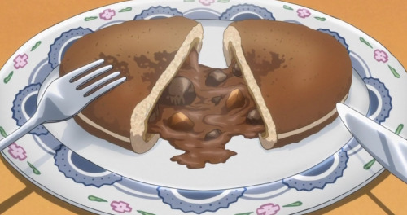

Go back to main site
Chocolate Curry Buns
Ingredients:
- 3 tbsp. butter
- ⅓ cup flour
- 2 tbsp.. garam masala
- 1-2 tsp freshly ground black pepper (depending on how spicy you want it)
- 1 tbs. tomato paste
- 1 tbs. Worcestershire sauce
Curry roux:
- 2 ½ cups all-purpose flour
- 1 tsp. dry yeast
- 2 tbsp. sugar
- 1 tsp. salt
- 1 tbsp. skim milk powder
- ½ cup water
- 1 egg
- 2 tbsp. butter
Dough:
- 2 tbsp. oil
- 1 small onion, sliced thin
- 1 clove of garlic, minced
- ½ pound beef chuck roast, cubed, or stew meat
- ¼ cup red wine (substitute 1/8 cup balsamic vinegar and 1/8 cup all-natural grape juice if you can’t get wine)
- 1 carrot
- 1 medium pre-cooked yukon gold potato
- 1 tbsp. apple puree or apple sauce
- 1 cardamom pod
- 1 whole star anise pod
- 1 bay leaf
- ⅓ cup peas (optional)
- Half of a bar of dark chocolate
Filling: